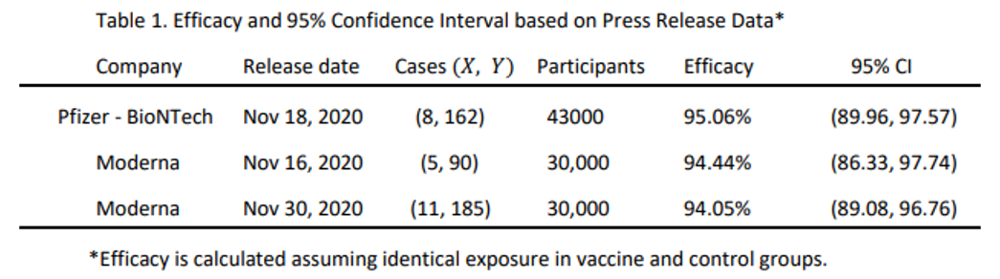
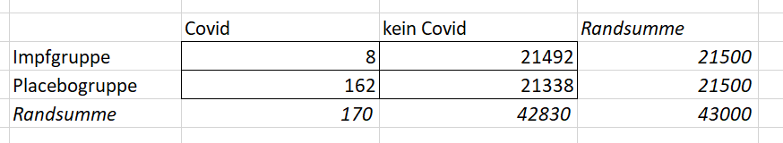
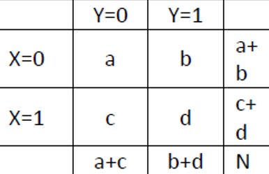
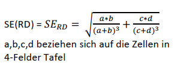
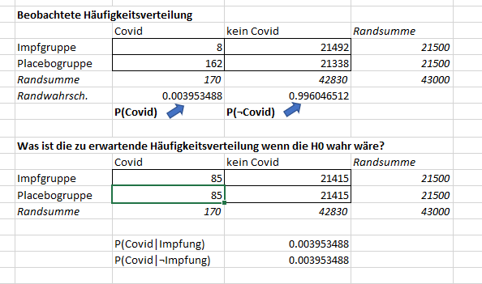
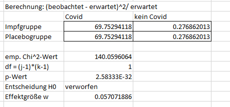
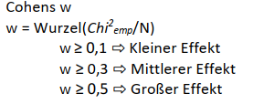
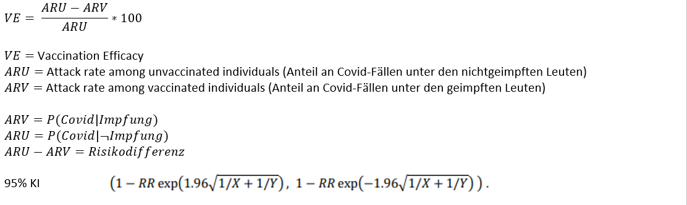

In dieser letzten Sitzung geht es um die Analyse von Nominaldaten, also um die Frage, wie man Zusammenhänge/ Unterschiede zwischen Variablen analysieren kann, die lediglich auf Nominalskalenniveau erfasst wurden. Die Excel-Datei mit den Daten dazu finden Sie hier. Je nachdem, wie viele Variablen vorliegen und wie viele Ausprägungen diese haben, lassen sich verschiedene statistische Verfahren anwenden. Wir schauen uns die folgenden an:
Wir schauen uns die Daten zur Wirksamkeit verschiedener Covid-19-Impfstoffe an. Eine Tabelle mit einer Übersicht aus einem kürzlich publizierten Pre-Print sehen Sie unten:

Die erste Spalte listet die verschiedenen Hersteller auf. Die zweite Spalte gibt die Daten der Ergebnisveröffentlichungen an. Die dritte Spalte ist die wichtigste für uns. Sie zeigt die Häufigkeiten von Covid-Erkrankungen in der Impfgruppe (X) und der Kontrollgruppe (Y). Die vierte Spalte zeigt die Stichprobengröße. Die fünfte Spalte zeigt die geschätzte Effektivität der Impfstoffe (wie man diese schätzt ist nicht klausurrelevant aber sehr interessant. Sie finden deshalb eine Zusatzarbeitsmappe “Und wieso 95% Wirksamkeit” dazu in der Excel-Datei für diese Sitzung.). Die letzte Spalte zeigt das Konfidenzintervall der Effektivitätsschätzung.
Wir interessieren uns für die Frage, wie Impfung (ja vs. nein) und Covid-Erkrankung (ja vs. nein) zusammenhängen. Bei effektiven Impfstoffen sollten wir natürlich (um es in der Sprache von Korrelationen auszudrücken) einen negativen Zusammenhang zwischen Impfung und Covid-Erkrankung erwarten. Oder anders ausgedrückt: wir erwarten, dass die Wahrscheinlichkeit für eine Covid-Erkrankung unter den geimpften Personen geringer ist als unter den ungeimpften Personen.
Zur besseren Veranschaulichung schauen wir uns nur die Daten für den Impfstoff von Pfizer-BioNTech an und übertragen diese in eine etwas anschaulichere Tabelle, die man auch Kontingenztabelle oder Vierfeldertafel nennt. Sie finden diese Tabelle auch in der Excel-Datei zu dieser Sitzung.

Die beiden Zeilen der Tabelle kodieren, ob man geimpft wurde oder nicht. Die beiden Spalten kodieren, ob eine Covid-Erkrankung vorlag oder nicht. Die Tabelle unten zeigt eine generische Kontingenztabelle mit den allgemeinen Bezeichnungen der verschiedenen Teile der Tabelle. Die Zeilen werden mit \(X\) und die Spalten mit \(Y\) kodiert (theoretisch könnte man das natürlich auch andersherum machen). Die vier verschiedenen Felder der Tabelle werden alphabetisch durchnummeriert. In unserem Fall kodiert die a-Zelle also all Versuchspersonen, die trotz Impfung im Untresuchungszeitraum an Covid-19 erkrankten und die b-Zelle alle geimpften Personen, die nicht an Covid erkrankten (a+b ergibt also die Zeilensumme; in unserem Fall die Anzahl an geimpften Personen in der Untersuchung).

Sie haben in der Veranstaltung Korrelationskoeffizienten für verschiedene Skalenniveaus kennengelernt und auf der Website zunächst die Produktmomentkorrelation (für zwei intervallskalierte Variablen) konzentriert. Auch für zwei nominalskalierte Variablen (mit jeweils zwei Ausprägungen) gibt es aber einen Korrelationskoeffizienten, die Phi-Korrelation. Diese berechnent man mit folgender Formel:
\(\phi~=\frac{a \cdot d - b \cdot c}{\sqrt{(a+c)(a+b)(c+d)(b+d)}}\).
Diese Formel würde \(r~= 1\) ergeben, wenn alle geimpften Personen an Covid erkrankt wären (in Zeile 1 alle Personen in der a-Zelle wären) und keine ungeimpfte Person an Covid erkrankt wäre (in Zeile 2 alle Personen in der d-Zelle wären). Ein Wert von \(r~= -1\) würde sich entsprechend ergeben, wenn keine der geimpften Personen aber alle ungeimpften Personen an Covid erkrankt wären.
In unserem Bsp. ergibt sich für die Tabelle basierend auf den Pfizer-BioNTech-Daten eine Phi-Korrelation von \(r~= -0.057\). Die Beurteilung der statistischen Signifikanz dieser Korrelation erfolgt dann auf dieselbe Weise, wie für alle Korrelationen (Stichwort: z-Test für Fisher-Z-transformierte Korrelation; s. letzte Sitzung). Unser geschätzter Korrelationskoeffizient entspricht einem z-Wert von \(z~= -11.85\). Das entspricht einem p-Wert von \(p~< .0001\). Überlegen Sie kurz: Wieso kann es sein, dass ein so kleiner Korrelationskoeffizient mit einem so extremen und unter der Nullhypothese unwahrscheinlichen z-Wert einhergeht?
Wir würden hier also die \(H_0\), die besagt, dass die Korrelation in der Population \(\geq~0\) ist, verwerfen und die \(H_1\) annehmen (\(r\leq~0\)).
Eine zweite Möglichkeit, den Zusammenhang zwischen Impfung und Covid-Erkrankung zu schätzen, ist, den Unterschied in den Wahrscheinlichkeiten für eine Covid-Erkrankung unter den geimpften und ungeimpften Personen zu analysieren. Anders ausgedrückt: kann man sagen, dass sich die bedingten Wahrscheinlichkeiten für eine Covid-Erkrankung unterscheiden? Dazu berechnen wir zunächst die beiden bedingten Wahrscheinlichkeiten:
\(P(Covid|Impfung)~= \frac{a}{a+b}~=\frac{8}{8+21492}~= 0.00037\) \((0.037\%)\),
\(P(Covid|\lnot Impfung)~= \frac{c}{c+d}~=\frac{162}{162+21338}~= 0.00753\) \((0.753\%)\).
Die Risikodifferenz (\(\Delta R\) oder \(RD\)) ist demnach:
\(\Delta R~= P(Covid|\lnot Impfung) - P(Covid|Impfung)~= -0.00716\) \((0.716\%)\).
Das bedeutet, bei Impfung sinkt das Risiko für eine Covid-Erkrankung im Vgl. zur Nichtimpfung um 0.716 Prozentpunkte. Ist diese Risikodifferenz nur Zufall oder können wir davon ausgehen, dass die Impfung tatsächlich das Risiko verringert? Diese Frage beantworten wir wieder mit einem Signifikanztest.
Dazu transformieren wir die Risikodifferenz in standardisierte z-Werte, indem wir \(\Delta R\) (bzw. \(RD\)) durch den Standardfehler von \(\Delta~R\) teilen. Der Standardfehler ergibt sich durch:

Wir erhalten einen Wert von \(0.000604\). Entsprechend ergibt sich ein empirischer z-Wert von \(z~= \frac{\Delta R}{SE_{\Delta R}~= \frac{-0.00716}{0.000604}~= -11.85}\). Oben bei der Phi-Korrelation, haben Sie schon gesehen, dass dieser z-Wert ein signifikantes Ereignis ist. Entsprechend führt auch diese Art der Analyse zur Verwerfung der \(H_0\) (die in diesem Fall besagt, dass die Risikodifferenz größer-gleich 0 ist). Wir nehmen die \(H_1\) an (die besagt, dass das die Risikodifferenz kleiner als 0 ist.)
Eine weitere Möglichkeit zur Analyse (die auch dann funktioniert, wenn mehr als zwei Ausprägungen der Variablen vorliegen) ist der Chi-Quadrat-Test für zwei kategoriale Variablen.
Dabei wird im Prinzip die beobachtete Häufigkeitstabelle (in unserem Fall die Vierfeldertafel von oben) mit einer Häufigkeitstabelle verglichen, die man erwarten würde, wenn die \(H_0\) zuträfe.
Diese “H0-Tabelle” muss man sich in Excel zunächst konstruieren, das Ergebnis sieht dann so aus, wie die untere Tabelle in der nachfolgenden Abb.:

Was ist die Logik hinter dieser “H0-Tabelle”? Unter der Ausgangstabelle oben im Bild sehen Sie eine ergänzte Zeile, die die “Randwahrscheinlichkeiten” für eine Covid-Erkrankung bzw. Nicht-Covid-Erkrankung zeigt. Damit ist einfach die Wahrscheinlichkeit gemeint, Covid bzw. kein Covid zu haben, ungeachtet dessen, ob man geimpft wurde oder nicht: \(P(Covid)\) und \(P(\lnot Covid)\). Die Idee ist, dass unter der \(H_0\) diese Randwahrscheinlichkeiten auch innerhalb der beiden Gruppen des Impffaktors auftreten. Denn: Wenn die Impfung keinen Effekt hat, dann sollte sich die Wahrscheinlichkeit, an Covid zu erkranken, nicht zwischen Impfung und Nicht-Impfung unterscheiden.
Die Formel zu Berechnung der unter der Nullhypothese zu erwartenden Zellenwerte ist:
\(p_i\) und \(p_j\) sind hierbei jeweils die Randwahrscheinlichkeiten (im Bild weiter oben haben wir die Zeilenwahrscheinlichkeiten nicht und könnten sie noch ergänzen. Es reicht aber auch, die Zeilensummen zu wissen.). Unter der \(H_0\) erwarten wir, dass die Wahrscheinlichkeit für Covid bei \(P(Covid)\) liegt. Wir multiplizieren also einfach diese Wahrscheinlichkeit mit der Anzahl der geimpften Personen, um die Anzahl der unter der \(H_0\) erwarteten Fälle in der a-Zelle zu bekommen. Das sind 85 (\(21500\cdot 0.00395\)). Ebenso multiplizieren wir die Anzahl der nichtgeimpften Personen mit \(P(Covid)\), um die erwarteten Fälle in der Placebogruppe (c-Zelle) zu erhalten. Die b- und d-Zelleneinträge kann man dann natürlich einfach durch Differenzbildung erhalten, könnte aber natürlich auch die Wahrscheinlichkeit für Nicht-Covid, \(P(\lnot Covid)\) verwenden.
Unter der H0-Tabelle in der Abbildung oben sehen sie auch die beiden bedingten Wahrscheinlichkeiten für Covid gegeben Covid bzw. gegeben Nicht-Covid. Diese entsprechen jetzt der Randwahrscheinlichkeit \(P(Covid)\), genau das, was man erwarten würde, wenn die Impfung gar keinen Einfluss hat.
Beim Chi-Quadrat-Test wird jetzt im Prinzip getestet, wie wahrscheinlich dieser oder ein noch extremerer Unterschied der beobachteten von der erwarteten H0-Tabelle auftritt. Dazu konstruiert man noch eine weitere Tabelle, die sozusagen den Unterschied der beiden Tabellen quantifiziert. Das geht so:

Man subtrahiert von den beobachteten Häufigkeiten die erwarteten Häufigkeiten, quadriert dann das Ergebnis und teil es durch die Anzahl der erwarteten Fälle. Das macht man für jede der vier Zellen.
Der Chi-Quadrat-Wert (der empirische Testwert), \(\chi^2\), ist dann die Summe aller Zellen dieser Tabelle. Der Wert, der sich in unserem Fall ergibt, ist in der Abbildung oben zu sehen. Die Tabellensumme hat eine Verteilung, die man Chi-Quadrat-Verteilung nennt (eine Verteilung, deren Werte z.B. nicht negativ werden können, da ja quadriert wird.).
Die Chi-Quadrat-Verteilung ist durch zwei Parameter gekennzeichnet, die Zeilen- (j) und Spalten-Freiheitsgrade (k). In unserem Fall ergibt sich \(df~= (j-1)\cdot (k-1)~= (2-1) \cdot (2-1)~= 1 \cdot 1~= 1\). Damit können unserem ermittelten Chi-Quadrat-Wert einen p-Wert zuordnen. Auch den sehen Sie oben in der Abbildung. Wie Sie sehen können, ist dieser kleiner als 0.05, weshalb wir auch bei dieser Analyse die \(H_0\), also die Hypothese, dass es keinen Zusammenhang zwischen Impfung und Covid-Erkrankung gibt, verwerfen.
Noch eine Anmerkung zur “Gerichtet-” bzw. “Ungerichtetheit” der Testung. Der Chi-Quadrat-Test ist immer ungerichtet, denn es gibt unter dieser Verteilung ja keine negative Seite der Verteilung. Bei signifikantem Test und vermuteter Richtung des Zusammenhangs muss man deshalb auch noch schauen, ob der Zusammenhang in der vorhergesagten Richtung liegt. Das Vorzeichen des Chi-Quadrat-Wertes gibt hier keine Auskunft (es gibt ja nur positive Werte).
Für den Chi-Quadrat-Test gibt es die Effektgröße Cohen’s \(w\) (das Ergebnis für unseren Fall sehen Sie auch oben in der Abbildung):

Im Falle einer Vierfeldertafel entspricht Cohen’s \(w\) dem Phi-Korrelationskoeffizienten.
Aufgrund der Daten von Pfizer-BioNTech wurde eine Impfeffektivität von ca. 95% geschätzt. Keines der oben besprochenen Analyseverfahren hat diesen Wert geliefert. Augenscheinlich wird die Impfeffektivität also anders ermittelt. Der Vollständigkeit halber, schauen wir uns jetzt noch an (das ist aber nicht klausurrelevant), mit welcher Formel das eigentlich gemacht wird, nämlich mit folgender (die sie auch im letzten Excel-Tabellenblatt finden):

Zur Logik hinter dieser Formel, unten zunächst eine Animation, mit der Sie ein sehr gemeines Experiment simulieren können. Stellen Sie sich vor, dass erforscht werden soll, wie gut ein neuer Impfstoff vor einer tödlichen Infektionskrankheit schützt. Dazu soll zunächst ein Tierexperiment durchgeführt werden, bei dem eine Gruppe von Versuchsmäusen geimpft wird, während die andere nur eine Placebobehandlung bekommt.
Links sehen Sie eine Stichprobe von Versuchsmäusen, die geimpft wurden. Rechts die Placebogruppe. Durch Drücken auf “Start” können Sie nun beide Gruppen dem gefährlichen Virus aussetzen. Sie können dann beobachten, wie viele Mäuse in jeder Gruppe erkranken.
Die Animation zeigt, dass in diesem Fall keine der geimpften Mäuse erkrankt aber die Hälfte der Placebogruppe. Fragen Sie sich: Wie groß ist in diesem Fall die Phi-Korrelation? Erstellen Sie sich ggf. eine Vierfeldertafel in Excel mit den Ergebnissen der Animation. Wie groß ist die Risiko-Differenz bzw. Risiko-Reduktion? Welche Impfeffektivität ergibt sich stattdessen?
Die Formel oben ergibt eine Impfeffektivität von 100%. Welche Logik fängt diese Formel ein, die die Risikodifferenz und auch die Phikorrelation nicht einfängt? Stellen Sie sich vor, wie viele Fälle in der Impfgruppe aufgetreten wären, wenn diese gar nicht geimpft worden wäre. Was wäre der Erwartungswert? Wir würden erwarten, dass sich dann auch in dieser Gruppe die Hälfte der Individuen infiziert. Die andere Hälfte - diejenigen, die sowieso uninfiziert bleiben - sind für die Wirksamkeit des Impfstoffs somit gar nicht diagnostisch. Wie viele Fälle wurden daher in Anwesenheit des Impfstoffs verhindert? Antwort: 100% der Fälle, die ohne die Impfung erwartungsgemäß aufgetreten wären. Das ist, was die Formel berechnet.
Die Formel für die Impfeffektivität wurde bereits im Jahr 1915 von Greenwood und Yule entwickelt, die sich damals noch für die Evaluation der Wirksamkeit von Impfungen gegen Typhus und Cholera interessierten. Die Publikation finden Sie hier
Copyright © 2020 Simon Stephan. All rights reserved.